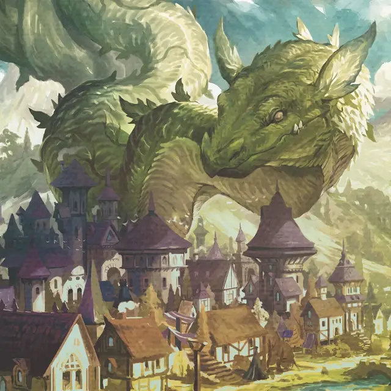

Бобовый вурм
Beanstalk Wurm
Громадный Монстр, без мировоззрения

Класс Доспеха 16 (природный доспех)
Хиты 231 (14к20 + 84)
Скорость 50 футов, лазая 50 футов
| мод | спас | ||
|---|---|---|---|
| СИЛ | 27 | +8 | +14 |
| ЛОВ | 18 | +4 | +4 |
| ТЕЛ | 22 | +6 | +12 |
| мод | спас | ||
|---|---|---|---|
| ИНТ | 4 | −3 | −3 |
| МДР | 14 | +2 | +2 |
| ХАР | 10 | +0 | +0 |
Чувства пассивное Восприятие 12
Опасность 18 (20000 опыта)
Бонус мастерства +6
Особенности
Фальшивая внешность. Если в начале боя вурм полностью неподвижен, он с преимуществом совершает бросок инициативы. Более того, если существо не заметило движений или действий вурма, оно должно преуспеть в проверке Интеллекта (Расследование) Сл 18, чтобы распознать, что вурм одушевлен.
Листочки-поручни. Существа с преимуществом совершают проверки характеристик, совершаемых для взбирания на вурма.
Легендарное сопротивление (3/день). Если вурм проваливает спасбросок, вместо этого он может выбрать успех.
Регенерация. Вурм восстанавливает 20 хитов в начале своего хода, если у него есть хотя бы 1 хит. Если вурм получает урон огнём или электричеством, эта способность не действует в начале его следующего хода.
Действия
Мультиатака. Вурм совершает две атаки Укусом.
Укус. . Рукопашная атака оружием: +14 к попаданию, досягаемость 15 футов, одна цель. Попадание: 30 (5к8 + 8) колющего урона. Если цель — существо Большого размера или меньше, она должна преуспеть в спасброске Ловкости Сл 22, иначе вурм её проглотит. Проглоченное существо становится опутано, имеет полное укрытие от атак и других эффектов снаружи и получает 28 (8к6) колющего урона в начале каждого хода вурма от шипов в пищеводе вурма.
Желудок вурма может вместить до двух существ одновременно. Если вурм получает 30 или более урона за один ход от существа внутри него, вурм в конце этого хода должен преуспеть в спасброске Телосложения Сл 22, иначе он извергнет всех проглоченных существ, каждое из которых падет ничком в пространстве 10 фт. от вурма. Если вурм умирает, проглоченное существо перестает быть опутанным и может выбраться из трупа, потратив 10 футов перемещения, при выходе падая ничком.
Описание
«Когда ценные питомцы великанов покидают Штормкельд, деревни рушатся и возникают новые Вечные стебли».
Вурмы — огромные существа, напоминающие лишенных конечностей и крыльев драконов, хотя у них нет драконьего дыхания и острого интеллекта. В мире Элдраина многие вурмы приспособились к жизни среди высоких бобовых стеблей. Эти бобовые вурмы имеют лиственные побеги, питаясь смесью естественного фотосинтеза и плотоядной диеты.
Обитающие в облаках великаны часто используют бобовых вурмов в качестве первой линии обороны от тех, кто взбирается на массивные бобовые стебли (также известные как Вечные стебли) и вторгается в их облачные дворцы. Вурмы бобового стебля лежат, свернувшись клубочком, по всей длине Вечного стебля с закрытыми глазами и прижатым животом к стеблю, выглядя как еще одна огромная лоза, пока вкусный злоумышленник не попытается взобраться на них.